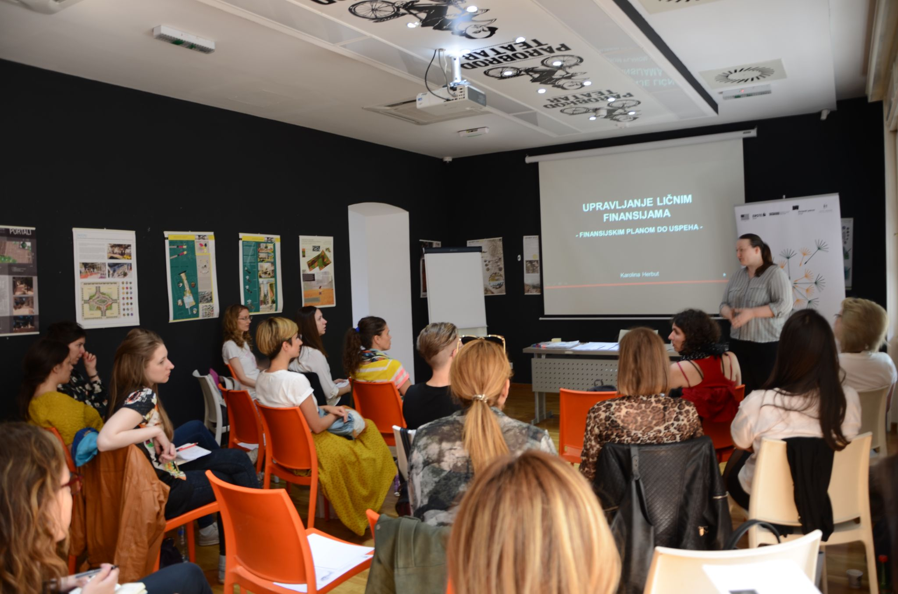

O benefitima i njihovom značaju, razgovarali smo sa Karolinom Herbut, vlasnicom firme Herbut Consulting i predsednicom Centra za finansijsku edukaciju i osnaživanje (CEFIN). Karolina i njen tim pomažu fizičkim i pravnim licima, i njihovim zaposlenima, da preuzmu kontrolu nad svojim ličnim finansijama.
Šta za vas lično predstavljaju benefiti koje poslodavac pruža zaposlenima?
Sa aspekta poslodavca, nesporno je da su benefiti značajni za employer branding, i da pomažu da poslodavac zadrži zaposlene, ali i da privuče nove kadrove.
Sa aspekta zaposlenih, benefite vidim kao nešto što ima potencijal da “olakša” život i unapredi kvalitet života i svakodnevnicu zaposlenih. U nekim slučajevima, benefiti mogu olakšati donošenje odluka pojedinaca, ostavljajući im više vremena, a i novca za stvari koje su njima bitne. Ako za primer uzmemo da zaposleni ima plaćenu teretanu ili joga časove, ili hranu na poslu, ne mora svakodnevno da razmišlja o tome. Poznato je, kako uspešni ljudi gledaju da smanje broj odluka koje donose i da ubrzaju proces donošenja odluka. Ako neko ima dobrovoljno-privatno zdravstveno osiguranje, mogućnost da angažuje terapeuta, finansijskog ili drugog savetnika, kouča, onda ne samo da to finansijski znači zaposlenom, već ne mora sam da ulaže dodatno vreme da nađe odgovarajuću uslugu za sebe.
Po vašem mišljenju, u kojoj meri benefiti mogu da utiču na zadovoljstvo i angažovanost zaposlenih?
To zavisi od više faktora. Na primer, od toga da li su benefiti koje zaposleni imaju na raspolaganju zaista oni benefiti koji su njima potrebni, koji olakšavaju njihov život i utiču na kvalitet života. U vezi sa tim je važno da postoji komunikacija između poslodavca i zaposlenih o njihovim potrebama i povremena provera da li su se te potrebe menjale.
Obezbediti benefite koji će svima podjednako odgovarati je izazovno, zato je odlično ako poslodavci imaju mogućnost da zaposlenima omoguće da oni sami izaberu benefite u skladu sa svojim preferencijama. U tom slučaju je nesporno da će benefiti pozitivno uticati na zadovoljstvo zaposlenih. Što se tiče angažovanosti zaposlenih, osvrnula bih se na moj prethodni odgovor, da ako su benefiti takvi da olakšavaju i unapređuju njihov život, zaposleni će biti rasterećeniji i definitivno će njihov angažman biti veći i performanse bolje.
Primera radi, prema anketi kompanije PwC, više od polovine ispitanika je reklo da im finansijska ili novčana pitanja/izazovi uzrokuju najviše stresa. Čak 50% zaposlenih koji su pod stresom zbog svojih finansija, kažu da im to predstavlja distrakciju na poslu. Dakle, ako poslodavac omogući zaposlenima finansijsku edukaciju, podršku finansijskog savetnika i kouča za rešavanje finansijsko-novčanih nedoumica, to će pozitivno uticati na angažovanost zaposlenih na poslu.
Koji su to benefiti koje ste imali prilike da koristite tokom karijere, a koji su imali najpozitivniji uticaj na vas lično?
Najviše mi je značila mogućnost korišćenja službenog automobila.
Predstavite vašu kompaniju
Herbut Consulting pruža usluge finansijske edukacije, savetovanja i koučinga i pomaže fizičkim i pravnim licima, kao i njihovim zaposlenima da:
Karolina Herbut, osnivačica Herbut Consulting, je lansirala prvi online kurs o ličnim finansijama na našim prostorima, e-knjigu „Upravljanje ličnim finansijama“ i jedinstvenu štampanu finansijsku beležnicu koje mogu da pohađaju ili kupe svi koji žele da investiraju u svoju finansijsku edukaciju i povećanje finansijske pismenosti.

Predstavite vaše usluge-benefite koje vaša kompanija pruža
Od benefita koje pružamo bih izdvojila online kurs o ličnim finansijama koji je dostupan samostalno (STANDARD paket), ali i sa konsultacijama 1 na 1 sa finansijskim savetnikom (INVEST paket). Kurs obuhvata sedam modula: uverenja i odnos prema novcu, postavljanje ciljeva, kreiranje jednostavnog finansijskog plana, ideje za optimizaciju troškova, dodatnu zaradu i stvaranje pasivnih prihoda, investiranje i štednja i na kraju automatizacija finansija.
Što se tiče konsultacija 1 na 1 sa finansijskim savetnikom, one obuhvataju sledeće teme: 1) koje su opcije štednje i investiranja u Srbiji 2) kako da postavite sistem za praćenje vaših finansija i kreirate lični finansijski plan.
Pored paketa kurseva o ličnim finansijama i konsultacija, u ponudi je i e-knjiga “Upravljanje ličnim finansijama”. Knjiga ima 7 celina i svaku celinu prate radni listovi koje svako može da popunjava u skladu sa svojim primerom. Svi benefiti koje “Herbut Consulting” pruža dostupni su online.
Spisak benefita ćemo širiti i prilagoditi potrebama zaposlenih i poslodavaca, tako da ćemo po potrebi dodati konsultacije o stambenim kreditima, biznis koučing usluge, kao i druge usluge iz naše ekspertize za koje zaposleni i poslodavci izraze interesovanje.
Šta je za zaposlene najveća vrednost benefita koje vaša kompanija pruža?
Rekla bih da postoje dve najveće vrednosti: finansijska sloboda i finansijska kontrola. Ovo su ujedno i dva najčešća motiva zbog kojih mi se klijenti obraćaju. Mnogima je važno da grade finansijsku slobodu, da mogu da budu gospodari svog vremena i novca, da nauče kako da raspolažu novcem koji imaju i istovremeno pronađu izvore dodatne zarade. Sa druge strane, kod nekoga se javlja osećaj da nema kontrolu nad novcem, da koliko god da zaradi, finansije mu-joj izmiču i želi to da promeni. Tokom kursa o finansijama i na konsultacijama upravo pokrivamo ove teme i odgovaramo na pitanje KAKO da neko ostvari svoje finansijske ciljeve. Kada znate gde vaš novac odlazi, kada možete da trošite novac bez griže savesti i da jedan deo novca odvojite za štednju ili investiranje, onda imate kontrolu nad finansijama i nalazite se u stanju mira. Danas nam je to stanje potrebno više nego ikada ranije, a ključne vrednosti koje bih izdvojila su i mir i sloboda.
Šta su najveći izazovi koje kompanije danas imaju prilikom kreiranja programa benefita za zaposlene?
Kao najveći izazov, izdvojila bih kreiranje programa benefita, koji mogu da odgovore na potrebe i želje zaposlenih, uzimajući u obzir da se te potrebe konstantno menjaju. Zato i smatram da je platforma Benefiti.rs sjajna, jer omogućava poslodavcima da ponude svojim zaposlenima raznovrsne benefite na jednom mestu, bilo da je reč o kursu o finansijama, joga časovima, koučingu, a zaposleni mogu da ih izaberu prema svojim trenutnim potrebama.
Ujedno, tu vidim i još jednu veliku prednost personalizovanih benefita – odgovornost za odabir benefita je na samom zaposlenom.
Da li je nova situacija sa pandemijom uticala da promenite pristup pružanja vaše usluge?
Online kurs o finansijama sam lansirala još početkom 2019. godine, jer sam verovala da online programi pružaju nove mogućnosti: fleksibilnost, uštedu u vremenu, mogućnost pohađanja iz drugih mesta i zemalja. Pandemija je na naše usluge uticala tako da smo i ostale programe (radionice) i usluge (konsultacije, koučing) preneli online.
Ko je tim koji stoji iza svega?
Vlasnica firme Herbut Consulting je Karolina Herbut je finansijska savetnica, edukatorka i kouč. Karolina je ujedno i predsednica Centra za finansijsku edukaciju i osnaživanje (CEFIN). Ona se zalaže za povećanje finansijske pismenosti, rodne ravnopravnosti i ekonomsko osnaživanje građana. Razvoj i funkcionisanje ovih programa pomaže grupa saradnika koja se sastoji od stručnih saradnika iz finansijskog sektora, iz oblasti marketinga, a neprocenjiva je podrška programerke i dizajnerke.